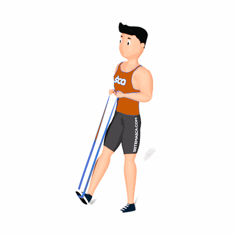

Flexão Plantar Unilateral com Faixa Elástica

O exercício trabalha a hipertrofia dos músculos da panturrilha, com ênfase nos músculos Gastrocnêmio e Sóleo.
Ficha Técnica
Tipo: Funcional
Grupo Muscular: Perna
Aparelho: Nenhum
Músculos: Nenhum
Como realizar
- Em pé com as pernas estendidas, eleve uma das pernas a frente de seu corpo;
- A Mini Band deve ser passada na sola do pé e com as mãos puxe o elástico fazendo força em sua direção;
- Simultaneamente realize a flexão do pé para baixo o máximo que conseguir e depois para cima;
- Repita os movimentos, conforme o número de repetições orientado pelo o professor;
- Ao termino das repetições, realize os movimentos com o outro pé.
 RC STORE
RC STORE